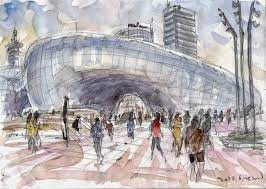
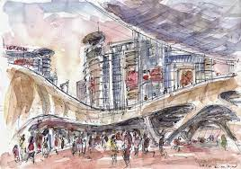
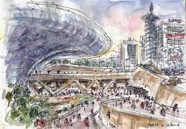

Le Dongdaemun Design Plaza (DDP) à Séoul, Corée du Sud, est une merveille architecturale contemporaine signée Zaha
Hadid.



Croquis Dongdaemun Design Plaza Seoul, Corée du Sud par Zaha HADID
Inauguré en 2014, ce complexe multifonctionnel allie l'esthétique futuriste à des fonctionnalités novatrices. Les
courbes organiques et les lignes fluides du DDP créent une structure visuellement époustouflante, intégrant des espaces
publics, des boutiques, des espaces d'exposition et des aires de repos.